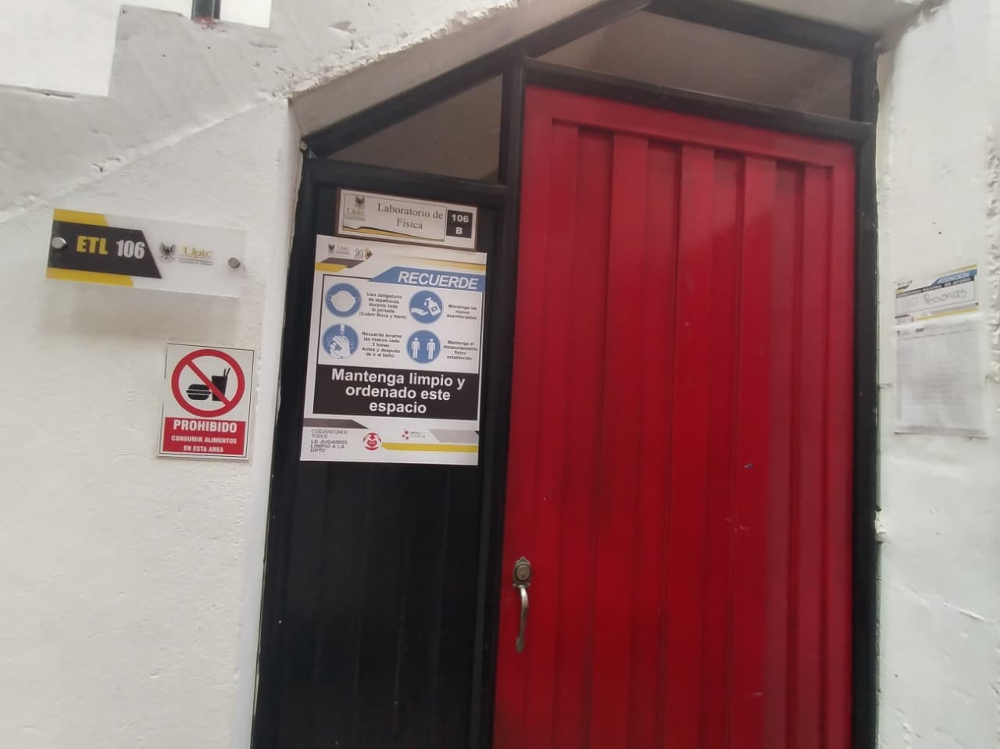

LICENCIATURA EN TECNOLOGÍA
LICENCIATURA EN TECNOLOGÍA
1. Laboratorio de Física

¿Qué es un laboratorio de Física en la UPTC?
Un laboratorio de Física de la Universidad Pedagógica y Tecnológica de Colombia (UPTC) es un espacio académico donde los estudiantes pueden comprobar, mediante experimentos y prácticas, los fenómenos físicos que estudian en las clases teóricas.
En este espacio se utilizan equipos, instrumentos de medición, materiales y montajes experimentales para observar cómo se comportan diferentes fenómenos de la naturaleza, como el movimiento, la fuerza, la energía, la electricidad, el magnetismo, las ondas, el sonido y la luz.
La idea principal es que los estudiantes no solamente aprendan las fórmulas y los conceptos de Física, sino que también puedan experimentar, manipular equipos, tomar datos, realizar mediciones, elaborar gráficas y comparar los resultados obtenidos con la teoría.
¿Qué se hace en un laboratorio de Física?
Generalmente, las prácticas consisten en:
- Observar fenómenos físicos: identificar cómo se comportan los objetos, las ondas, la luz o la electricidad.
- Realizar montajes experimentales: organizar equipos y materiales para desarrollar una práctica.
- Tomar mediciones: utilizar instrumentos como cronómetros, reglas, multímetros, sensores y balanzas.
- Registrar datos: organizar los resultados en tablas.
- Realizar cálculos y gráficas: aplicar fórmulas para interpretar los resultados.
- Analizar conclusiones: comprobar si lo observado coincide con los conceptos estudiados en clase.
Ejemplo de experimento: la cubeta de ondas

La cubeta de ondas es un equipo que permite observar cómo se comportan las ondas en la superficie del agua. Mediante un dispositivo que produce vibraciones, se generan ondas que se desplazan por la cubeta.
¿Qué se puede estudiar?
- Formación y propagación de ondas.
- Reflexión de las ondas.
- Refracción al pasar de una profundidad a otra.
- Difracción cuando las ondas pasan por una abertura.
- Interferencia entre dos ondas.
Ejemplo de práctica: generar ondas circulares y observar qué sucede cuando encuentran una barrera o pasan por una abertura. Así se puede comprender cómo las ondas cambian su dirección y su comportamiento.